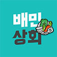

2-1. 추가 · 수정 기능
재료 구매처 연결
사러 가기
 식봄
식봄
 이마트몰
이마트몰
 롯데마트 제타
롯데마트 제타
전
식봄 고정 링크 하나
후판매처 6곳 중 사장님이 고름
식봄쿠팡
농협몰
이마트몰롯데마트 제타
배민상회재료 시세 화면 → 사러 가기 → 판매처
고른 곳의 그 재료 검색 결과로 바로 이동
영수증 → 더 싼 곳
영수증 사진 한 장
↓ kg당 단가로 평소 가격과 비교
비싸게 샀어요 깐양파 15kg 2,300원/kg · 14,700원 더 냄
↓ '더 싼 곳' 버튼
식봄 판매처를 kg당 싼 순서로
살피는 팔지 않고 연결만
쿠팡 파트너스 제휴 링크 → 구매 시 수수료 3% (BM 수익원)
쿠팡 파트너스 제휴 링크 → 구매 시 수수료 3% (BM 수익원)
※ 영수증 숫자는 시연(가상) 영수증 11.04 살피마트 예시